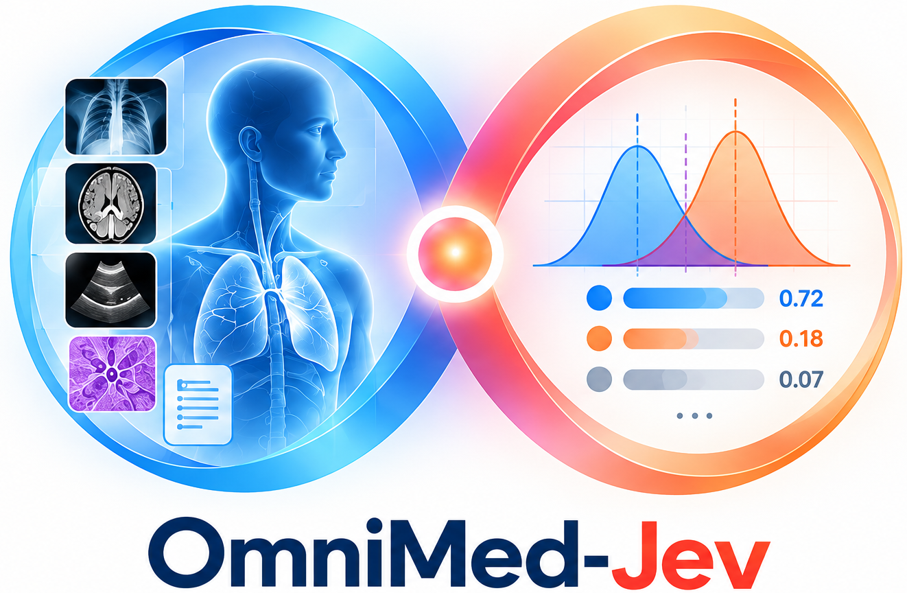
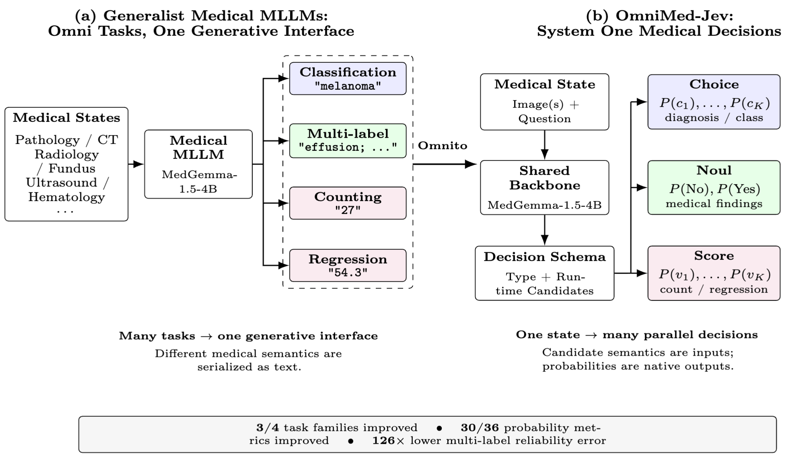
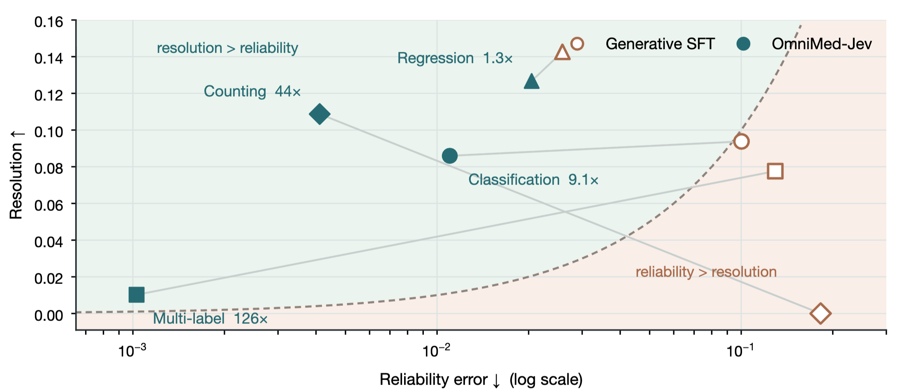
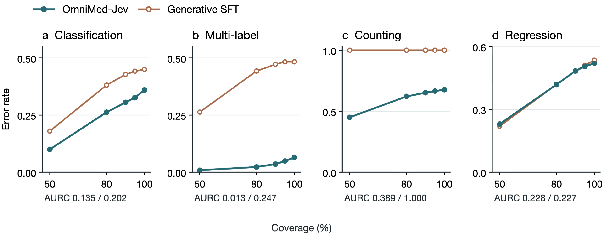
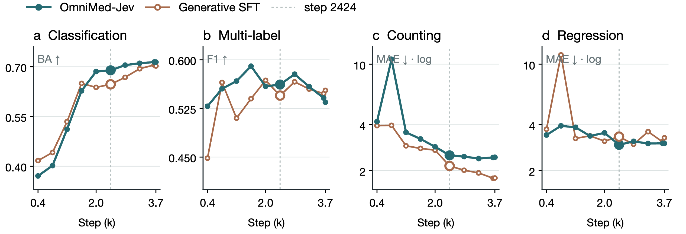

Choice
Pick a class.
Mutually exclusive candidates for diagnosis, organ or tissue classification.
P(c₁), P(c₂), …, P(cₖ)
OmniMed-Jev turns bounded medical predictions into native decision distributions — so a model can answer correctly, and tell you how likely it is to be correct.

The number a medical model reports should be a number a decision rule can trust.
Diagnoses, finding lists, counts and measurements are all serialized into text. The model's probability is about the next token, not directly about the medical decision.
Overconfidence lets errors pass with too little scrutiny. Underconfidence sends cases that could be handled automatically to unnecessary review.
Make the candidate set part of the input and train the model to return a normalized distribution over the decision itself.
The shared MedGemma-1.5-4B backbone reads the image, question and runtime candidate set. A shared scorer returns a probability distribution for each decision in one forward pass.
Mutually exclusive candidates for diagnosis, organ or tissue classification.
A separate No / Yes distribution for each radiographic finding.
An ordered grid for counts, ejection fraction and retinal scores.

Figure 1 · The backbone stays multimodal; the output object becomes a candidate-conditioned decision distribution.
Under an interface-controlled comparison, point predictions remain comparable while reported probabilities track observed correctness much more closely.
| Task family | Metric | Gen-SFT | OmniMed-Jev | Direction |
|---|---|---|---|---|
| Classification | Balanced accuracy ↑ | 0.6469 | 0.6892 | comparable |
| Multi-label | Macro F1 ↑ | 0.5449 | 0.5618 | comparable |
| Counting | MAE ↓ | 2.1429 | 2.5159 | baseline ahead |
| Regression | MAE ↓ | 3.3400 | 2.9488 | comparable |
The point-prediction comparison establishes no general accuracy advantage. Counting is the boundary case: folding a distribution over a wide ordered grid to its expectation can pull extreme values toward the centre.

Figure 3 · OmniMed-Jev moves all four families to the side where the reported number is more reliable than the baseline's reconstructed confidence.

Figure 4 · Better confidence ranking supports lower-risk selective prediction, especially for multi-label findings.
The same state can carry a diagnosis, a set of findings and measurements without collapsing them into one generated string.
Image, modality and question enter the shared multimodal backbone.
S + Q + C → hidden statesEach candidate is read as semantic input, not as a fixed output index.
zⱼₖ = f(hstate, hcⱼₖ)Use the distribution for ranking, shortlisting, folding or escalation.
p(c) → review / act
Figure 2 · The two interfaces learn differently across checkpoints; the comparison uses step 2424.
The repository ships the decision interface, training and evaluation scripts, frozen splits, figure data and reproduction notes.
Python package, configs, launch scripts and the two-stage MedJev trainer.
23,558 train UIDs, 600 validation UIDs and 726 held-out test states.
LoRA adapter plus decision head on top of google/medgemma-1.5-4b-it.
Metrics, reconstruction caveats and every not-like-for-like detail are documented.
@article{tang2026omnimedjev,
title = {OmniMed-Jev: Calibrating LVLM Confidence for Trustworthy Medical Multimodal Decisions via System One},
author = {Tang, Luyao and Chen, Cheng},
journal = {arXiv preprint arXiv:2610.00381},
year = {2026}
}